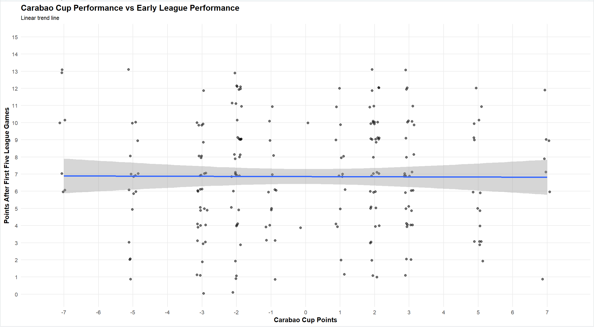
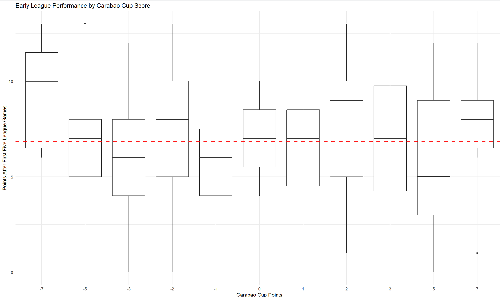

Following Oxford’s disappointing Carabao Cup exit to Leyton Orient, I sought to console myself using data analysis. Preceding all league games for the first time, it was comforting to view this round of games as a bunch of glorified pre-season friendlies; and we all know friendlies mean nothing.
I had a hypothesis that a positive result in the first round of the league cup did not have any association with a good start to your league campaign, which is clearly the priority. To test this, I compared the quality of each of the 72 league cup round one results with the points they gained in their opening 5 league games, using data from the 3 previous seasons.
Not all wins are equal. The triumph of a League Two team over Championship opposition would be a more encouraging result than, conversely, a Championship team punching down on a League Two team. Hence I awarded a weighted points system to all cup results I analysed over the period. A standard 3 points was given for defeating a team in your own league, whereas 2 and 1 points were given for beating teams a league or two below you, respectively. 5 and 7 points were awarded for triumphs in the opposite direction. Additionally, to portray the inequality in the severity of losses, identical negative points were awarded for teams on the other end of these results.
If a Championship side beat a League Two outfit, 1 and -1 points were awarded to the winner and loser respectively. However, if the League Two team had triumphed in the encounter, they would have received 7 points, with their embarrassed neighbours losing 7 points on account of the upset.
NOTE: Some zero scores were awarded for Championship teams who were given byes to the 2nd round when this was the system in practice.
I applied this scoring system to all clubs competing in the EFL Cup first round over the past 3 years, giving me over 200 relevant data points when comparing this score to the points each team accumulated in their first 5 league games of the same season. Below is the jitter plot of this comparison.

Immediately, from the shape of the data, it is apparent that there is not a strong positive correlation within this sample. In fact, one of my first observations was the emptiness of the bottom-left section of the plot. Whilst several Championship teams have fallen to League Two opposition in the first round of the EFL Cup over the period, none have recorded less than 6 points in their first 5 games. In other terms, no Championship team has started both the League and the Cup in disastrous fashion over the past 3 years.
In contrast, a matching data point which gained 7 points for a big upset in the cup only gained one point in their first 5 League Two games. This was Doncaster Rovers in the 23/24 season, who beat Championship opposition Hull City away from home in the cup, but failed to record a win in their first 5 league games. On the other hand, Hull started their league campaign handsomely, recording 10 points in 5 games, putting a cup embarrassment behind them.
Over the past 3 seasons, it is clear that seismic first round cup upsets foretell little on initial league success for either team involved. What about less extreme results? I’m certainly still fearing the worst after Oxford lost to Orient, who we’ll be facing in League One this season. We can examine matching box plot diagrams to determine if these sorts of match-ups hold more importance.

The dotted red line shows the average league points in the first 5 games across the past 3 seasons. Using this, we can compare the fortunes of teams experiencing specific levels of success or failure. Immediately, I wanted to observe the ‘-3’ plot, of other teams experiencing defeat against opposition in their own league, in the EFL Cup first round. The median points collected after 5 games for these teams was significantly lower (by about 1 point) than the average. If we’d have won that tie, I’d have instead been looking at the ‘3’ plot, with a median just marginally greater than the average. Bad news for Oxford; ties against opposition in your own league are more foretelling of initial league success than those against opposition in different leagues.
The plots for values not of ‘3’ and ‘-3’ seem much more random. It would make sense that mismatched ties offer worse predictions for league success than ones against realistic league opposition. The lowest median value is for teams that I awarded 5 points to, for beating opposition in the league above. Perhaps these ties were difficult enough to tire and stretch squads early in the season, without being such remarkable wins they provided overwhelming momentum and confidence for the games ahead. Then again, this group had a wide range, and hence the median acts as a less relevant predictor.
So, the significance of your nerves or confidence given to you by the EFL Cup first round may ride on your opposition. Lose to a team in a different league? Worry not. A hot, sticky and drab 2-0 away loss to Leyton Orient? We might be in trouble.